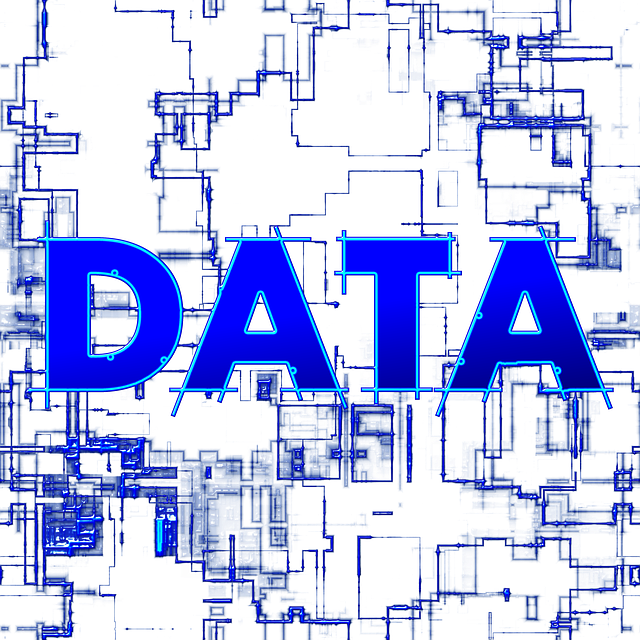

Nama : Muhamad Arsyil Adzhim_191011450284_MingguKe1
Tugas : Minggu Ke 1
Pertemuan : 1 - 2

MUHAMAD ARSYIL ADZHIM |
|
Nama : Muhamad Arsyil Adzhim_191011450284_MingguKe1 Tugas : Minggu Ke 1 Pertemuan : 1 - 2 |
|
|
Kesimpulan : Pertemuan 1 Menurut kesimpulan saya, Dalam materi komunikasi data mencakup materi yang luas, mencakup 3 area, yaitu komunikasi data, jaringan serta protocol. Tiga hal berbeda yang menjadi pendorong perkembangan komunikasi data serta arsitekturnya juga fasilitas jaringan adalah : • Pertumbuhan trafaik. Untuk menghadapi pertumbuhan trafik maka kita berusaha untuk memaksimalkan kapasitas dan menghemat biaya transmisi • Perkembangan layanan baru. Perkembangan layanan membuat kebutuhan akan jaringan dengan kapastas tinggi dam fasilitas transmisi semakin meningkat • Kemajuan teknologi Dan Komunikasi data menggabungkan beberapa teknik dan teknologi dengan tujuan utama memungkinkan segala bentuk komunikasi elektronik. Teknologi ini termasuk telekomunikasi, jaringan komputer dan komunikasi radio / satelit. Komunikasi data biasanya memerlukan keberadaan media transportasi atau komunikasi antara node yang ingin berkomunikasi satu sama lain, seperti kawat tembaga, kabel serat optik atau sinyal nirkabel. Sebagai contoh lainnya, Misalnya contoh umum dari komunikasi data adalah komputer yang terhubung ke Internet melalui koneksi Wi-Fi, yang menggunakan media nirkabel untuk mengirim dan menerima data dari satu atau lebih server jauh. Beberapa perangkat / teknologi yang digunakan dalam komunikasi data dikenal sebagai peralatan komunikasi data (DCE) dan peralatan terminal data (DTE). DCE digunakan pada node pengirim, dan DTE digunakan pada node penerima. |
|
Pertemuan 2 Menurut kesimpulan saya, Pertukaran dua alat atau lebih melalui me transmisi di dalam komunikasi data memiliki komponen yang harus ada dalam kehidupan sehari-hari, komunikasi data sangat bermanfaat dan berkembang dengan pesat. Untuk contohnya: Manusia dapat belajar dan membahas protokol dengan detail, Membuat perangkat menjadi modular, sehingga pengguna hanya menggunakan modul diperlukan dan membuat lingkungan saling terkoneksi / bisa di sebutkan bahwa data analog dan digital mempunyai perbedaan yang begitu signifikan, yaitu data digital jauh lebih berkualitas dan fleksible kalau dibandingkan dengan data analog dan itu semua terbukti melalui proses pengiriman data analog yang terus menerus dan memakan arus yang lebih tinggi, sedangkan data digital proses pengiriman datanya hanya menggunakan bit- bit rate yaitu ‘0’ dan ‘1’, maka proses pengiriman datanya akan lebih cepat kalau dibandingkan dengan data analog. Sebagai contoh lainnya ialah hubungan antara data rate dan bandwidth : • Anggaplah data biner dienkodekan menjadi sinyal digital dan dikirimkan melalui media transmisi • Sinyal digital akan mempunyai bandwith yang tak terhingga tetapi media transmisi terbatas bandwidthnya, dimana dapat membatasi data rate yang dapat dibawa oleh media transmisi • Bandwith yang terbatas menyebabkan distorsi pada sinyal input, yang akan membuat penginterpretasian sinyal yang diterima menjadi lebih sulit Yang intinya : Semakin terbatas bandwidth maka semakin besar distorsi dan semakin besar potensi kesalahan pada penerima, lalu semakin tinggi kecepatan data semakin besar bandwith efektifnya, dan Semakin lebar bandwidth pada system transmisi maka semakin tinggi kecepatan data yang dapat dikirimkan. bahwa data analog dan digital mempunyai perbedaan yang begitu signifikan, yaitu data digital jauh lebih berkualitas dan fleksible kalau dibandingkan dengan data analog dan itu semua terbukti melalui proses pengiriman data analog yang terus menerus dan memakan arus yang lebih tinggi, sedangkan data digital proses pengiriman datanya hanya menggunakan bit- bit rate yaitu ‘0’ dan ‘1’, maka proses pengiriman datanya akan lebih cepat kalau dibandingkan dengan data analog. |
MUHAMAD ARSYIL ADZHIM |
|
Nama : Muhamad Arsyil Adzhim_191011450284_MingguKe2 Tugas : Minggu Ke 2 Pertemuan : 3 - 6 |
 |
Pertemuan 3 Beberapa kesimpulan yang bisa saya ambil dalam materi ini ialah : Gangguan adalah suatu hal, getaran, atau gelombang yang mendistorsi pengiriman pesan dalam proses komunikasi. Gangguan menyebabkan perbedaan antara pesan yang diterima oleh penerima (receiver) dengan pesan yang dikirimkan oleh sumber (source) Dalam proses komunikasi, setidaknya dikenal tiga macam gangguan yang terdapat dalam pengiriman pesan, yakni : Apa sih pelemahan itu? Asal dari kata lemah yang berarti tidak berdaya, maka pelemahan ini terjadi karena ada satu atau beberapa faktor yang menyebabkan sinyal dalam transmisi tidak mampu dicapai. Sinyal yang dipancarkan oleh transciver tidak mampu ditangkap oleh receiver. Pelemahan ini terjadi karena satu hal yakni jarak. Jangkauan yang terlalu jauh menyebabkan sinyal tidak mampu disampaikan. Mengapa disebut penyimpangan?
Derau atau yang biasa disebut noise adalah suatu sinyal gangguan yang bersifat akustik (suara), elektris, maupun elektronis yang hadir dalam suatu sistem (rangkaian listrik/elektronika) dalam bentuk gangguan yang bukan merupakan sinyal yang diinginkan. |
Pertemuan 4 Beberapa kesimpulan yang bisa saya ambil dalam materi ini ialah : Merupakan jenis media yang dibungkus oleh isolator. Sisinya memuat lebih dari satu pasang konduktor (misal 10 s/d ratusan) yang kemudian dibungkus menjadi satu kesatuan. Aplikasi multi pair umumnya digunakan untuk telegraph, voice telephoni, backhaul seperti T1 Salah satu contoh yang umum kita gunakan saat ini adalah kabel UTP atau kabel STP yang di dalamnya terdiri dari beberapa pair konduktor. Jenis media koaksial terdiri dari dua konduktor, yaitu kondusktor dalam dan konduktor luar. Lalu keduanya dipisahkan dengan sebuah isolator. Aplikasi dari kabel koaksial ini sangat luas diataranya adalah : a) Hubungan antar sentral dengan pelanggan b) Hubugungan antar transceiver dengan antenna (sering di sebut sebagai feeder) c) Penghantaran saluran E1 Pandu gelombang atau wave guide merupakan konduktor berongga yang dapat menghantarkan gelombang elektro magnet. Bentuk wave guide umumnya berbentuk : a) Rongga segi empat b) Rongga lingkaran c) Rongga ellips d) Rongga H e) Secara fisik ada yang bersifat solid, namun ada juga yang besifat Fiber optik merupakan media yang terbuat dari bahan gelas silika atau bahan transparent yang lain. Sinyal yang di hantarkan adalah berupa cahaya dengan panjang gelombang 0.8 s.d 1.6 nm. Fiber optik memiliki beberapa karakteristik diantaranya sebagai berikut : a) Media tipis dan flexibel b) Kapasitas besar c) Redaman rendah d) Latency / delay yang rendah e) Isolasi elektromagnetik f) Kebutuhan repeater dapat dikurangi g) Laju dalam orde Gbps untuk jarak puluhan KM Secara konstruksi media fiber terdiri dari dua bagian utama yaitu core dan cladding. |
Pertemuan 5 Beberapa kesimpulan yang bisa saya ambil dalam materi ini ialah : Pada dasarnya, arti dari media transmisi adalah jalur atau media yang dipakai untuk membawa informasi dari sender atau pengirim menuju ke receiver atau penerima. Kualitas serta kemampuan sebuah media transmisi biasanya akan tergantung dari beberapa faktor, seperti: • Bandwidth (Lebar Pita) : Lebar cakupan frekuensi yang dipakai sinyal pada media transmisi dan satuan bandwidth adalah Hertz. • Noise : Gangguan ketika transmisi data lewat media transmisi tertentu. Noise sebenarnya merupakan sinyal yang tidak diinginkan baik untuk pengirim atau penerima. • Radiasi : Kebocoran sinyal dari media akibat adanya karakteristik listrik yang tidak diinginkan di media yang berkaitan. • Attenuation : Tingkat kehilangan energi ketika perambatan sinyal atau pelemahan sinyal ketika perambatan. Macam-Macam Media Transmisi Jika dilihat secara garis besar, media media transmisi bisa dibagi ke dalam dua jenis utama yakni Wired atau Guided Media dan juga Wireless atau Unguided Media. Unguided media atau wireless merupakan media yang memakai sistem gelombang elektromagnetik ketika mentransmisikan informasi dari pengirim ke penerima tanpa adanya perangkat fisik yang menuntunnya. Unguided media biasa disebut dengan wireless yakni media transmisi tanpa kabel.
Frekuensi radio merupakan media transmisi yang memakai gelombang elektromagnetik dengan kisaran frekuensi antara 3kHz sampai 300Ghz. Biasanya frekuensi radio memakai antena untuk menyebarkan gelombang elektromagnetik. Media transmisi frekuensi radio banyak digunakan untuk Radio FM dan juga televisi. Gelombang mikro atau microwave merupakan media transmisi yang memakai gelombang elektromagnetik dengan frekuensi super tinggi yakni berkisar 3GHz sampai 30 GHz dengan panjang gelombang kurang lebih 1 mm sampai 1m untuk mentransmisikan sinyal dari pengirim ke penerima. Infrared atau infra merah merupakan media transmisi yang memakai radiasi elektromagnetik dari panjang gelombang yang lebih panjang dari cahaya tampak akan tetapi lebih pendek dibandingkan dengan radiasi gelombang radio. Inframerah ini umumnya dipakai untuk komunikasi jarak dekat seperti remote control TV atau alat elektronika lainnya. Satelit merupakan jenis media transmisi yang memakai satelit untuk menerima sinyal dari stasiun di bumi dan memancarkannya ke stasiun bumi lainnya. Masing masing satelit yang mengorbit akan beroperasi di beberapa band frekuensi yang dinamakan dengan channel transponder. Media transmisi tersebut akan dipakai untuk telepon jarak jauh, siaran TV dan juga jaringan bisnis privat. ii) Kabel Koaksial (Coaxial Cable) iii)Kabel Serat Optik (Fiber Optic Cable) Low Earth Orbit (LEO) Satelit dengan orbit terendah dengan ketinggian 500-2000 km diatas permukaan bumi. Waktu yang digunakan untuk mengelilingi bumi adalah 30 menit sampai 1 jam. Contoh dari satelit LEO ini adalah Iridium Satelit. • Middle Earth Orbit (MEO) Satelit dengan orbit menengah dengan ketinggian 8000-20.000km dengan waktu revolusi 50-12 jam. contoh satelit MEO adalah Telstar • Geostationary Earth Orbit (GEO) Satelit dengan orbit tinggi yaitu 35.786 km dari permukaan bumi dan waktu untuk berevolusinya adalah 24 jam. contoh satelit ini adalah Palapa Intelsat-7 • Highly Elliptical Orbit (HEO) Satelit yang memiliki ketinggian 500-50.000 km dengan waktu rotasi 24 jam. Contoh satelit ini adalah Russian Monilya Systemdari semua jenis satelit komunikasi diatas, semuanya memiliki peranan penting dalam kehidupan manusia. Bayangkan jika ada satelit buatan tersebut, mungkin kita tidak bisa menonton televisi, mendengarkan siaran radio, melakukan komunikasi menggunakan telfon atau handphone bahkan pengunaan internet. Tekhnologi satelit juga digunakan ketika terjadinya bencana alam, dimana tidak ada jaringan satelit darat yang dapat berfungsi. Sehingga dapat disimpulkan, tekhnologi satelit ini telah membuat manusia kehidupan manusia tidak mungkin dalam ketiadaan. • Kelebihannya : Kita dapat mengakses tanpa batas tempat dengan cepat dan murah selain itu kita bisa berkomunikasi seluruh dunia. • Kekurangannya : Internet dapat mengakses hal hal negatif dan bisa memalsukan profil orang. |
Pertemuan 6 Beberapa kesimpulan yang bisa saya ambil dalam materi ini ialah : Encoding adalah proses memasukkan deretan data untuk diubah ke format khusus agar bisa disimpan atau ditransmisikan dengan tujuan meningkatkan kualitas komunikasi. CHANNEL CODING Channel coding merupakan teknik encoding yang digunakan untuk pendeteksian dan pengkoreksian kesalahan dalam transmisi informasi. Channel coding terdiri dari dua jenis yaitu FEC (Forward Error Correction) dan BEC (Backward Error Correction). CONVOLUTION CODE Metode konvolusi selain untuk mendeteksi kesalahan namun dapat juga digunakan untuk mengkoreksi kesalahan. LATIHAN SOAL ! |